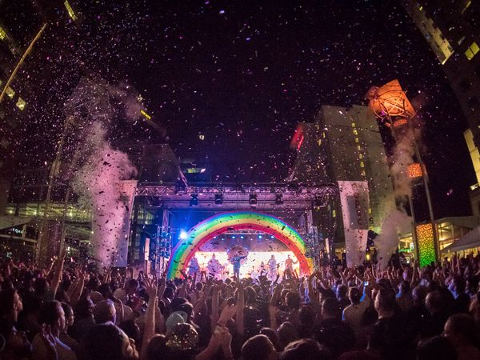

There's even something for those that are interested in the historic side of Raleigh, here are the recommended historic sites to visit while in Raleigh:
Raleigh has so much to offer when it comes to entertainment and festivities. From indoor rock climbing to Frankie's Fun Park to the Videri Chocolate Factory, there are many things to do with kids as well as adults. There is no age limit to fun in Raleigh!
The top recommended places to visit in Raleigh are:
The top festivals to go to in Raleigh are:
There's even something for those that are interested in the historic side of Raleigh, here are the recommended historic sites to visit while in Raleigh: